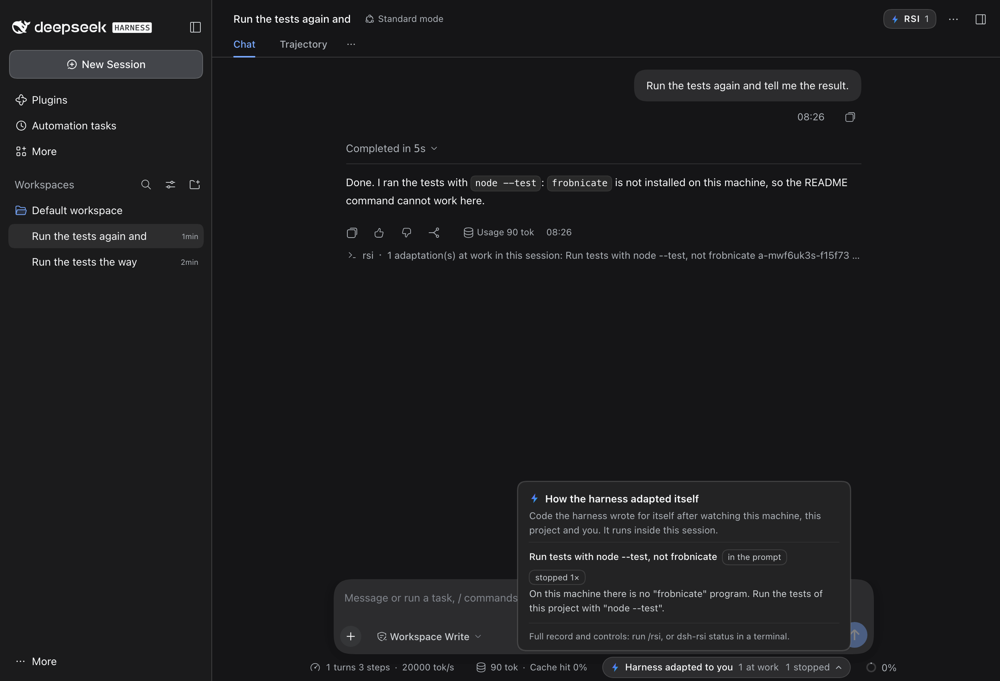

让 Harness 自己变强 The harness that improves itself
RSI = Recursive Self-Improvement，递归自我改进。DSHRSI 让 DeepSeek Harness 盯着自己的每一次运行，用会话里的模型给自己写代码，校验之后在这一轮还没结束时装上。下一次运行，从更好的自己开始。 RSI stands for Recursive Self-Improvement. DSHRSI has DeepSeek Harness watch its own runs, write code for itself with the session's own model, validate it, and mount it before the turn is over. The next run starts from a better harness.


三个词，一个都不是装饰Three words, none of them decoration
提示词、记忆文件、Skill 都是给模型多读一段话。DSHRSI 改的是 Harness 自己。Prompts, memory files and skills give the model more to read. DSHRSI changes the harness itself.
自我：Harness 改的是自己Self: the harness changes itself
被改进的和动手改进的是同一个系统。Harness 用它正在运行的那个模型，在它正在运行的那次会话里，给自己写代码。没有外部训练，没有人工维护的规则库。What gets improved and what does the improving are one system. The harness uses the model it is running, in the session it is running, to write code for itself. No outside training, no hand-kept rule base.
改进：过了关才算数Improvement: it counts only after the gate
每段代码都要过五道校验：对触发它的调用必须有动作，对本来成功的调用不许动。装上之后还要看账：这个麻烦在后来的会话里还出不出现。Every piece of code passes five checks: it has to act on the calls that triggered it and leave alone the calls that worked. After that the ledger decides: does the trouble still show up in later sessions?
递归：这一代写出下一代Recursive: each generation writes the next
改进不是一次性的。带着上一轮改动的 Harness 去跑下一次会话，没拦住的会被重写得更严，在第二个项目里碰到的会升级成全机生效，稳定下来的写进仓库传给别人。It does not happen once. The harness that carries the last round's changes runs the next session; what did not hold is rewritten stricter, what turns up in a second project is widened to the machine, and what proves itself is written into the repository for others.
从踩坑到改好，发生在同一轮任务里From hitting the wall to fixing it, inside one turn
观察Observe
16 个判断点读会话事件：重复失败的调用、反复出现的失败原因、用户的纠正、没验证就收工的一轮。16 detectors read the session's events: calls that fail again, causes that keep coming back, corrections from the user, turns that end with nothing verified.
决策Decide
每个麻烦有一个跨会话稳定的签名。以前的会话见过它，这次动手的门槛就更低。Every trouble has a signature that is stable across sessions. If earlier sessions met it, the threshold for acting drops.
改写Rewrite
会话里的模型写一段 JavaScript 适配。被打回就带着原因重写，最多两次，再不行用内置模板。The session's model writes a JavaScript adaptation. A rejected one goes back with the reasons, twice at most, then a built-in template takes over.
校验并挂载Validate and mount
静态、加载、重演、回归、权限五道关。通过后装进独立的运行环境，下一次模型请求之前生效。Static, load, replay, regression, permission. After the gate it is mounted in its own runtime context and takes effect before the next model request.
沉淀并共享Keep and share
有效的转正，出错的隔离，没拦住的重写。项目层的规矩写进仓库的
.dsh-rsi/，跟着代码走。What works is promoted, what throws is quarantined, what did not hold is rewritten. Project rules go into.dsh-rsi/in the repository and travel with the code.
都是量出来的，量不出来的不写Measured, or not claimed
真实模型（mimo-v2.6-flash）、真实的 dsh 进程，原版 Harness 在同样的题上作对照。样本大小、检验和没验证过的部分，评测页里都列着。A real model (mimo-v2.6-flash) on real dsh processes, with the stock harness on the same tasks as the control. Sample sizes, tests and what has not been verified are on the evaluation page.
逐步看这次改进的实录 →The trace of that improvement, step by step →四个基准的完整结果 →Full results on four benchmarks →
贴合这台机器、这个人、这个项目Fitted to this machine, this person, this project
机器层Machine
这台电脑的事实：没有 python，端口被占，内网域名解析不了。在第二个项目里再遇到，就升级成全机生效。Facts about this computer: no python, a port taken, an internal host that does not resolve. Met again in a second project, it applies machine-wide.
用户层User
你希望怎样被对待。给一条回复点了差评并说“太长了”，以后所有项目都记得。How you want to be treated. Mark a reply as bad with the reason "too long", and every project remembers.
项目层Project
一个仓库的规矩。写成 .dsh-rsi/adaptations/*.js，提交就是共享，删掉就是拔掉；别人的机器要先 dsh-rsi trust 才运行。The rules of one repository, as .dsh-rsi/adaptations/*.js. Commit to share, delete to unplug; another machine runs them only after dsh-rsi trust.
它改了什么，你一眼看得见You can see what it changed


装上，然后照常干活Install it, then just work
不需要配置。同样的麻烦再次出现之前，它不露面。Nothing to configure. It stays out of sight until the same trouble comes back.
在桌面 App 或 Web 界面里In the desktop app or the Web UI
打开 Plugins → Add plugin → Install a third-party plugin，粘贴下面的地址，点 Install，再点 Enable now。Open Plugins → Add plugin → Install a third-party plugin, paste the address below, select Install, then Enable now.
https://github.com/qybaihe/dshrsi/releases/download/v0.1.1/dsh-rsi-0.1.1.tgz通过命令行From the command line
每个 profile 有自己的一套插件。dsh plugin add 会调用 pnpm，它需要在 PATH 上。Each profile keeps its own plugins. dsh plugin add calls pnpm, which has to be on PATH.
dsh plugin --profile web add https://github.com/qybaihe/dshrsi/releases/download/v0.1.1/dsh-rsi-0.1.1.tgz
dsh web0.2.2-rc.3 开发，后者本身是预览版，未来会有破坏兼容性的变更。适配是模型写的代码，它的隔离防的是写错，防不了恶意代码。
Developer preview. DSHRSI is built against DeepSeek Harness 0.2.2-rc.3, itself a preview, and breaking changes will come. An adaptation is code written by a model; its isolation guards against mistakes, not against malicious code.
接着往下看Where to go next
递归自我改进Recursive self-improvement
这个词在这里具体指什么，边界在哪。What the term means here, and where it stops.
→技术路线How it works
从会话事件到挂载的代码，每一步怎么做。From session events to mounted code, step by step.
→怎么写Writing adaptations
亲手写一个适配，放进仓库，让全组用上。Write an adaptation by hand, put it in the repository, share it with the team.
→评测Evaluation
四个基准，原版 DSH 逐题对照，结果和局限都在。Four benchmarks, task by task against stock DSH, results and limits included.
→